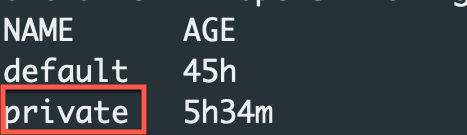
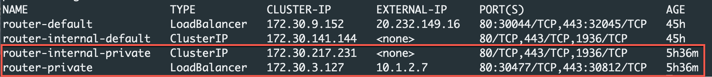
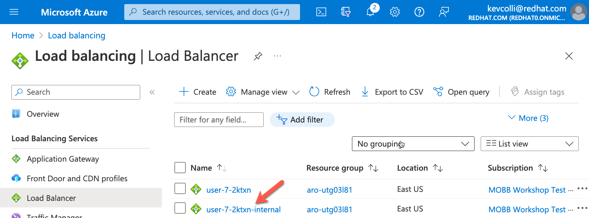
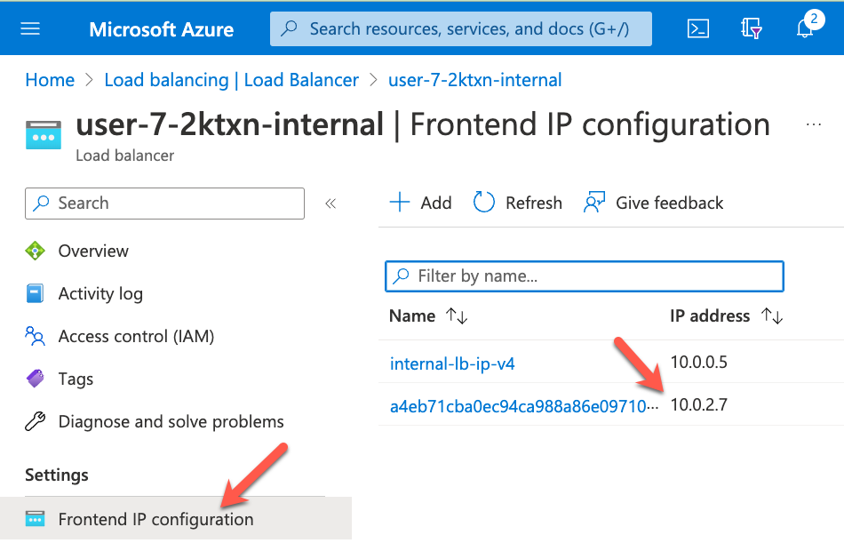
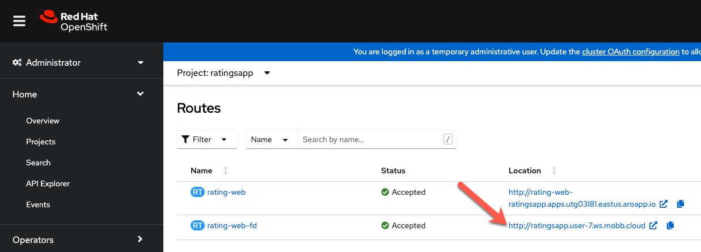
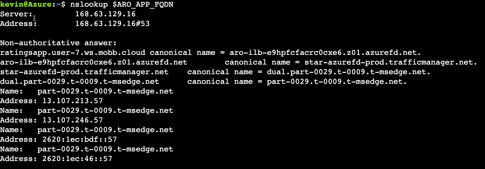

2B deploy app
Expose the application with Front Door#
Up to this point, we have deployed the minesweeper app using the publically available Ingress Controller that comes with OpenShift. Best practices for ARO clusters is to make them private ( both the api server and the ingress controller) and then exposing the application you need with something like Azure Front Door.
In the following section of the workshop, we will go through setting up Azure Front Door and then exposing our ratings application with Azure Front Door using a custom domain.
The following diagram shows what we will configure.

There are several advantages of this approach, namely your cluster and all the resources in your Azure account can remain private, providing you an extra layer of security. Azure FrontDoor operates at the edge so we are controlling traffic before it even gets into your Azure account. On top of that, Azure FrontDoor also offers WAF and DDoS protection, certificate management and SSL Offloading just to name a few benefits.
As you can see in the diagram, Azure Front Door sits on the edge of the Microsoft network and is connected to the cluster via a private link service. With a private cluster, this means all traffic goes through Front Door and is secured at the edge. Front Door is then connected to your cluster through a private connection over the Microsoft backbone.
Setting up and configuring Azure Front Door for the ratings application is typically something the operations team would do. If you are interested in going through the steps, you can do so here
Verify the private Ingress Controller#
As you will remember the first part of the workshop, we created a public cluster where the API and default Applications endpoints are exposed to the Internet. To similate a private environment for the applications endpoint, a second Ingress Controller only exposed to the private network of our cluster has been created for you.
Let's check to make sure the IngressController has been created.
Expected output, you should see a 2nd private IngressController: 
Now, check that the corresponding LoadBalancer service has been created.
The output of this command should show that a route-internal-private and a router-private LoadBalancer service has been created. Note that there are no public IPs associated with the newly created LoadBalancer services.
Expected Output: 
Extra Credit
Validate the Load Balancer using the Azure Portal.
From the Azure Portal, search for Load Balancers and then click on the \<cluster name - id>-internal Load Balancer 
On the next screen click on Frontend IP configuration and note the IP address matches the LoadBalancer service you just retrieved with the CLI.

Configure the application to use Front Door#
Your operations team has already configured Front Door for you with a custom domain so now we can configure the application to use Azure Front Door and your custom domain.
Create new route
All we have to do is create a new route with our custom domain:
envsubst << EOF | oc apply -f -
apiVersion: route.openshift.io/v1
kind: Route
metadata:
labels:
app: rating-web
app.kubernetes.io/component: rating-web
app.kubernetes.io/instance: rating-web
type: private
name: rating-web-fd
spec:
host: $ARO_APP_FQDN
to:
kind: Service
name: rating-web
weight: 100
targetPort:
port: 8080
wildcardPolicy: None
EOF
Validate the Custom Domain From the OpenShift Console, click on Networking, Routes and then click on the url next to the newly create microsweeper-appservice-fd route.

Notice that the application is secured! This is done automatically for us by Front Door.

The last thing we will validate it where is your custom domain coming from. If you remember, one of the benefits of using Azure Front Door is that traffic is sent through and secured at the Microsoft edge rather than your application.
To check where the traffic is coming from run the following command from your cloudshell:
Notice how the results show traffic coming from *.t-msedge.net 
Congratulations, you now have an application exposed with Front Door using a custom domain. Continue to the next part to automate provisioning the application using OpenShift Pipelines.